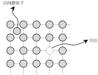
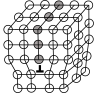
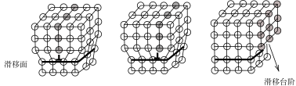

功率器件封装可靠性
蠕变：与时间有关的行为
我从事功率半导体器件的可靠性研究/项目已经有一段时间了，但对这个方向始终提不起兴趣，幸亏同期还有一些其他更有意思的项目吊着命。尽管努力想发掘一点值得一提的东西，但在应用层面上仍然只是在电力电子里面老调重弹——更不幸的是，即便在电力电子领域这个调子也已经有人弹过了。除了给旧酒瓶子贴新标签以外只能缝缝补补。一个重要的原因是，虽然我们尝试在电力电子项目里应用这个方法，但是在这个方法涉及的各个领域里我们都不专业。
促使我决定开始调研整理这个问题的因素主要有三个：
- 我打算以后搞点别的东西玩玩，但是既然做过相关的项目，我最好还是把这个问题梳理一下留下点东西，把不懂的东西扫一扫了却心事，既干脆自在，又能留个档以后也许能派上用场；
- 虽然这个问题不太有意思，但却是个越来越重要的问题，不断有朋友来和我沟通，让我无法在以往粗枝大叶的地方继续含混下去，如果能深入了解、整理一下，以后我只需要把这些材料传递给他们就能省下不少沟通的时间；
- 也是直接原因，前一段时间其他部门的同事遇到了一些堪称奇怪的问题，我跟着开了几次会，但是始终想不通，说话也自觉不知所云。解决不了问题，让前去提供“技术支持”的我良心上受了诘难，而且一直十分困扰。此外，我发现随意滥用自己并不理解的非本专业术语的现象广泛存在，当谈及“温度梯度”的时候，我们可能并不知道这个词语真实的内涵。
所以我决定零零散散地做一些阅读、整理和调研，尽量从基础机理的层面把这些问题整理个大概（也只是个大概，正如前面所说，在这些领域我不是专业的），免得像以前一样只是照本宣科地在电力电子领域背诵别人的只言片语。可以视这些内容为我的学习笔记。
简介
实际中，硬件周期性地加热和冷却会产生应力1，这些应力引将疲劳(fatigue)和蠕变(creep)耦合在一起，影响了器件封装中关键结构的寿命。对功率器件封装而言，以下几个焊接界面是最关键的结构：芯片表面的键合线结构、芯片底面的焊料结构、DBC与基板(baseplate)的焊料结构。
对我而言，蠕变这种时间相关的机制很奇特，因此我将从此开始。蠕变令人深刻的一点是它引发的变形会随时间推移而积累，而通常我们理想化地认为弹性应变和塑性应变是应力的瞬时响应。时间作为变量引入将会让分析顿时变得复杂。
不同材料对蠕变的敏感度不同。通常金属材料在处于绝对熔点温度的30%~60%时才会表现出显著的蠕变变形；外界条件相同时，铬镍铁合金的蠕变变形发生速度明显慢于不锈钢、铝合金等材料，因此高温环境中使用的金属材料通常都包含铬镍钴等合金化元素。
蠕变试验现象
典型的蠕变测试是在恒温、恒定外力情况下测量样品随时间变化的变形，如下图1所示。在此过程中，最重要的特性是应变积累的速率 \(\dot{\varepsilon} = \frac{d \varepsilon}{dt}\).
- 施加负载以后，发生瞬时弹性应变（也许还有塑性应变），然后蠕变逐渐累积；
- 蠕变第一阶段(初级蠕变/瞬时蠕变/primary creep)：此阶段内，\(\dot{\varepsilon}\)初始较大然后不断减小，最终接近常数；
- 蠕变第二阶段(稳态蠕变/steady-state creep/secondary creep)：蠕变速率 \(\dot{\varepsilon}\) 是恒定的，即曲线是线性的。在该蠕变阶段通常持续的时间最长；
- 蠕变第三阶段：速率会增加并导致最终的失效，这种失效通常称为断裂。
Figure 1: 恒定载荷下蠕变随时间的发展
从蠕变曲线中，我们可以得到2条直觉认识：
- 虽然外力/负载恒定，但材料的变形并不是稳定的，而是随着时间推移不断累积；
- 这种时变的蠕变变形在不同的时间尺度上特性也是不同的，在不同的阶段其蠕变速率不同。
蠕变的物理机制
我们应该稍微了解一下金属、合金这样的晶体材料蠕变的物理机制。蠕变涉及的复杂物理机制总体上可以分为两大类：扩散流动和位错蠕变。
扩散流动
- 晶体中的空位缺陷
- 固体材料可以根据原子或离子间排列的功率进行分类：
- 晶体：原子在很大范围内重复或周期性排列；
- 非晶：原子的排列缺乏大范围的排列规律
- 单晶 多晶 晶界
- 单晶：原子的周期性和重复性排列非常完美，延伸到整个样品而没有中断；
- 多晶：由很多小的晶体或晶粒(grains)组成；
- 晶界(grain boundary)：不同晶粒的交界面
- 实际晶体中存在着大量缺陷(点缺陷、线缺陷、面缺陷)
- 空位(vacancy)：正常的节点位置缺少了一个原子
- 自间隙原子：一个原子挤进了间隙位置

Figure 2: 晶体中的空位缺陷
- 固体材料可以根据原子或离子间排列的功率进行分类：
- 空位扩散
当晶体承受应力时，空位更容易在与应力方向垂直的晶界附近自发形成，导致此处空位浓度较高，从而引发空位从高浓度区域向低浓度区域扩散，最终导致晶粒形状发生变化，引发蠕变变形。
位错蠕变
- 晶体中的线缺陷：位错
位错指的是晶体内存在线状错排，包括刃型位错和螺型位错。我们在这里只展示刃型位错来获得一些简单直观的理解。
刃型位错如下图所示，这种缺陷的特征是有一个原子平面在晶体内部的一条边缘线(位错线)上终止了。在位错线周围原子排列会产生局部畸变。

Figure 3: 刃型位错缺陷
- 位错移动和塑性变形
塑性变形和大量的位错运动有关。当晶体承受 切应力 的时候，位错会发生滑移(slip)，每次只移动一个原子间距，最终这个终止的面会移动到晶体的表面，形成一个台阶，这个过程如下图所示。位错滑移所在的平面称为滑移面。
大量位错滑移面集中处最终会产生大量的位错滑移台阶，塑性变形经常集中于此。

Figure 4: 位错滑移与滑移台阶
- 位错蠕变(也称为幂律蠕变)
一种用来解释蠕变的位错移动机制还位错攀移。当位错的滑移面上存在障碍时，位错无法继续滑移；此时如果想要继续变形位错就只能离开原本的滑移面，迁移到相邻的平面，这个过程称为攀移。这种位错攀移需要结合空位缺陷扩散的方式，因此这种蠕变的过程似乎是受到扩散控制的。此外，这种攀移过程也是和时间相关的。
机制总结 扩散 Arrhenius方程
通过对蠕变物理机制简单的了解，可以发现蠕变与扩散过程(两种机理都涉及空位的扩散)相关。
扩散指的是通过原子运动而形成的物质输运现象，这个过程发生要求满足2个基本前提：
- 有空缺的相邻位点，即有可以转移的位置；
- 原子得有足够的能量解除原本位置的束缚并完成移动，即有能量
- 扩散发生有多快：传质速率(Rate of mass transfer)
通常用扩散通量(diffusion flux, \(J\))衡量扩散发生的速率，即传质速率。
扩散通量 \(J\)定义为为单位时间内垂直通过单位截面积上的扩散物质质量\(M\)(或原子数：
\begin{equation} J= \frac{M}{At} \end{equation}其中， \(A\)表示扩散发生的截面积， \(t\) 表示扩散时间。
很容易拿电流来进行简单的类比，如果输运的物质恰好是电荷 \(Q\)，那么简单来看：
- 电流的定义 \(I=Q/t\)
- 电流密度的定义 \(J=I/A=Q/At\)
显然扩散通量之于物质输运，就如同电流密度之于电荷移动：当电流密度很大的时候，说明电子正在进行快速运动。
- 扩散系数(diffusion coefficient)
使用电流来类比物质输运是非常自然的，在半导体物理里面是顺理成章的推导，在这里我们将也能获得一些直觉结果。
在稳态情况（即任意点上的状态不会随时间发生变化）下，如果材料内部物质浓度 \(C\) 存在不均匀，那么在浓度差异的驱动下将会产生扩散，这个过程可以通过Fick's first law进行描述：
\begin{equation} J=-D \frac{d C}{d x} \end{equation}其中，\(D\)称为扩散系数；\(\frac{dC}{dx}\)表示沿着\(x\)方向的浓度梯度。
假设扩散在单位面积的材料内相差单位距离的两点(m,n)之间发生(\(A=1,dx=1\))，上式就是
\begin{equation} J=-DdC \end{equation}再使用欧姆定律进行简单类比，此时 \(A=1\)，所以电流密度就等于电流，假设m点和n点之间的电压（电势差）为\(V\)，电阻为\(R\)，电导为\(G\)，那么：
\begin{equation} I = \frac{1}{R}V = GV \end{equation}- 驱动力：电压-浓度差
- 速率：电流密度-扩散通量
- 系数：电导(电阻倒数)-扩散系数
因此，扩散系数\(D\)的大小描述了原子扩散承受的阻力，或者说扩散的难易程度：
- \(D\)较大意味着扩散的“电导”比较大，或者说“电阻”比较小，扩散很容易进行；
- \(D\)较小意味着扩散的“电导比较小”，或者说“电阻”比较大，扩散较难进行。
- Arrhenius关系
前面提到过，扩散发生的必然要求之一是有能量，即原子能量水平影响了扩散的难易程度，现在我们可以建立能量和扩散系数之间的关系：
- 当原子能量比较高的时候，扩散很容易发生，因此扩散系数\(D\)比较大；
- 当原子能量比较高的时候，扩散难以发生，因此扩散系数\(D\)比较小。
影响原子能量的重要因素是温度：
- 温度提升会加剧原子相对于自身平衡位置的平均振动，在此能量水平下，原子更容易离开原本的位置发生扩散
- 这种情况就是热激活的例子。
这个温度-能量-扩散难易程度-扩散系数的关系可以通过Arrhenius关系来描述，即扩散系数存在温度相关性：
\begin{equation} D=D_0 \exp \left( - \frac{Q_d}{RT} \right) \end{equation}其中，\(D_0\)是个常数，\(Q_d\)是扩散所需要的激活能，\(R\)是气体常数，\(T\)为绝对温度。
在热激活的物理过程中，Arrhenius关系的应用很广泛；其中激活能可以单位物质发生热激活过程（例如扩散）所需要的能量:
- 所需要的激活能越大，说明该物理过程越难发生，在扩散过程中，对应扩散系数越小。
从物理机理上，蠕变过程受扩散过程控制，因此可以预期蠕变的应变发生速率与温度存在一个Arrhenius项，即：
\begin{equation} \dot{\varepsilon} \propto \exp \left( - \frac{Q_d}{RT} \right) \end{equation}所以接下来有必要从蠕变物理机理涉及的因素出发刻画蠕变变性的数学形式。
蠕变模型
蠕变的物理机制揭示了几个重要的影响因素：
- 时间：从蠕变试验的曲线上可以清晰看到这种复杂行为；此外，位错攀移和时间有关；蠕变引发的塑性形变显然也会随着时间积累；
- 应力：例如当承受切应力的时候，会引发位错滑移；
- 温度：通过提供更多能量加剧热激活过程（扩散）。
这些因素导致了一些重要的现象：
- 金属和陶瓷：发生蠕变通常意味着较高的应力水平（接近屈服点），温度约为50%熔点之上；
- 电子焊料(60Sn-40Pb)：熔点仅为185摄氏度，因此在室温条件下也具有蠕变潜力，\(298K/458K=0.65\)；
- 钨丝要在非常高的温度里工作，因此需要强化抗蠕变能力；
- 电子封装中的陶瓷基板熔点在2000摄氏度以上，因此常规使用不会蠕变。
模型表达式
时间 \(t\)、温度 \(T\)、应力 \(\sigma\)对蠕变应变 \(\varepsilon\)的影响可以通过下面的表达式描述：
\begin{equation} \varepsilon = f(\sigma)g(t)\exp \left( - \frac{Q}{RT} \right) \end{equation}其中 \(Q\)表示蠕变激活能， \(f(\sigma)\)表达式描述应力的影响，有以下不同的形式：
| Name | \(f(\sigma)\) |
| Norton | \(A \sigma^n\) |
| Prandtl | \(B\sinh(b \sigma)\) |
| Dorn | \(C\exp(c \sigma)\) |
| Garafalo | \(D\sinh(f \sigma)^n\) |
在不同的蠕变阶段（瞬态蠕变、稳态蠕变、第三阶段蠕变）蠕变行为显然也不一样，这种特性通过 \(g(t)\)刻画：
| Stage | \(g(t)\) |
| primary creep | \(1+et^{1/3} \) |
| secondary creep | \(t\) |
| tertiary creep | \(t^m\) |
进一步，应变速率可以写为：
\begin{equation} \dot{\varepsilon} = f(\sigma) \frac{d g(t)}{dt} \exp \left( - \frac{Q}{RT} \right) \end{equation}稳态蠕变模型
第二阶段蠕变有较好的特性：
- 持续时间比较长；
- 蠕变应变率\(\dot{\varepsilon}\)是恒定的；
因此通常在这个阶段对易蠕变的材料进行条件设计。
稳态蠕变应变速率常用下面的现象方程描述：
\begin{equation} \dot{ \varepsilon_{sc} } = A \sigma^{n} \exp {\left( - \frac{Q}{RT} \right)} \end{equation}更加详细的模型表示为：
\begin{equation} \dot{ \varepsilon_{sc} }= \frac{A'}{d^{q} T}\sigma^{n} \exp \left( - \frac{Q}{RT} \right) \end{equation}其中， \(A', q, n \)参数的具体值取决于具体的蠕变机理， \(d\)是平均晶粒直径。
| 物理机制 | \(n\) | \(q\) | 描述 |
| 扩散流动(Nabarro-Herring/Coble蠕变) | 1 | 2 | 在低应力、高温度下发生 |
| 扩散辅助的位错蠕变 | 3~8 | 0 | 在高应力、中等温度发生 |
基于蠕变发生时内部物理机理的复杂性（如上表展示），可以预期公式(10)无法覆盖所有应力水平和温度下的蠕变变形。
蠕变的寿命估算：时间-温度参数
针对单纯的、恒定应力下的蠕变现象我们最后的一个问题是应该如何评估其寿命。
简单设想，如果我们能够将失效时间与影响因素的关系表示出来，就能通过控制变量法获得模型参数、唯一地计算失效时间。
虽然前面的分析缺乏直接可用的模型，但却可以导出性能指标(这里是蠕变应变)-时间关系。当处外力为\(\sigma\)、温度为 \(T\)时，稳态蠕变阶段的模型，例如公式(9)，显示应变速率 \(\dot{\varepsilon_{sc} }\)是个常数，据此粗略地估计时刻 \(t\)时蠕变应变为：
\begin{equation} \varepsilon = A \sigma^{n} t \exp \left( - \frac{Q}{RT} \right) \end{equation}当应变累积到一定程度\(\varepsilon_{0}\)(常数)的时候认为发生失效，对应的时间可以视为寿命\(t_r\)，那么
\begin{equation} \varepsilon_{0} = A \sigma^{n} t_{r} \exp \left( - \frac{Q}{RT} \right) \end{equation}接下来似乎只要利用控制变量的方法（加速实验）然后简单外推就能得到这个模型:
- 首先固定应力\(\sigma\)，改变温度\(T\)，记录\(t_r\)，可以计算出激活能\(Q\)；
- 其次固定温度\(T\)，改变应力\(\sigma\)，记录 \(t_r\)，可以计算指数 \(n\).
遗憾的是这样的方法似乎并不现实，当不同蠕变机理主导的时候，模型中的参数也会发生变化，这一点可以从上张表格的 \(n,q\)的取值中看出来：
- 激活能\(Q\)在温度和应力不同的情况下可能会因蠕变机理改变而变化，例如高纯铝在大约绝对熔点的50%以下时激活能减小；
- 当降低应力 \(\sigma\)获取 \(n\)时，主导机理的改变可能会导致 \(n\)在较小应力下发生突然改变，从而无法使用大应力实验得到的参数；然而，在这个小应力范围（但更接近实际使用情况）内，想要通过充分的实验得到真实的 \(n\)的取值不实际，实验可能持续几十年。
上述的外推方法在实际中效果不太好，为此需要引入一些观察、假设形成一些相对折中但也更成功方法，例如Sherby-Dorn参数法和Larson-Miller参数法，这些方法都涉及到时间-温度参数的使用。
Sherby-Dorn参数法
- Sherby-Dorn参数法的关键假设是激活能\(Q\)是个常数；
- 在此基础上，我们可以很简单地改变温度得到激活能，然后只需要解决\(n\)的问题就可以了；
- 如果固定任意温度，然后降低应力以获得 \(n\)，那么随着应力水平逐渐降低，失效时间\(t_r\)大幅延长以致不可能完成；
- 因此如果能够缩短低应力水平下的失效时间，就有希望在实验室内、在较短的时间内收集到更多可用的数据；
- 观察方程(13)，当应力固定在一个低水平情况下， \(\theta_r = t_r \exp ( - Q/RT )=const\)，即\(\theta _r\)是一个常数，因此通过提高温度可以降低失效时间 \(t_r\)；
- 因此，一个聪明的做法是：在降低应力水平的同时，提高蠕变的温度，从而将失效时间控制到可以进行的水平内；
- \(\theta _r\)是一个时间-温度参数，其对数形式\(log \theta_r\)就称为Sherby-Dorn参数\(P_{SD}\)，Sherby-Dorn参数法通过建立\(\sigma- P_{SD}\)关系并利用常数激活能假设，可以基于较多的实验点计算某个应力水平、温度水平下的蠕变寿命。
小结
到这里关于单纯蠕变的基本情况差不多理清了，感觉有不少收获。不过那些真正复杂的问题还没有提及，例如变化应力下的蠕变、应力松弛等，等把疲劳整理以后再来看这些问题会更加合适。
Footnotes:
我们将会回忆一下什么是应力，不过不是在这个小空白。
💬 评论